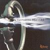

Celtic Lyrics Corner > Artists & Groups > Tannahill Weavers > Alchemy > Helen Of Kirkconnell
|  | Helen Of Kirkconnell |
| Credits : | Les Wilson; traditional lyrics |
|
a) Helen Of Kirkconnell
b) Les Wilson's Welcome To Lewis |
|
| Appears On : | Alchemy |
| Language : | Scots-English |
Lyrics :
I wish I were where Helen lies
Night and day on me she cries
Oh that I were where Helen lies
On fair Kirkconnell lee
Oh think ye na my heart was sair
When my love dropt down and spake nae mair
There did she swoon wi' meikle care
On fair Kirkconnell lee
Curst be the heart that thought the thought
And curst the hand that fired the shot
When in my arms burd Helen dropt
And died to succour me
Oh that I were where Helen lies
Night and day on me she cries
Out of my bed she bids me rise
Says, "Haste, and come to me"
Oh Helen fair, beyond compare
I'll weave a garland of thy hair
Shall bind my heart forever mair
Until the day I dee
I wish my grave were growing green
A winding-sheet drawn o'er my een
And I in Helen's arms lying
On fair Kirkconnell lee
Oh Helen fair, oh Helen chaste
Were I with thee I would be blest
Where thou lies low and takes thy rest
On fair Kirkconnell lee
I wish I were where Helen lies
Night and day on me she cries
And I am weary of the sky
For her sake that died for me